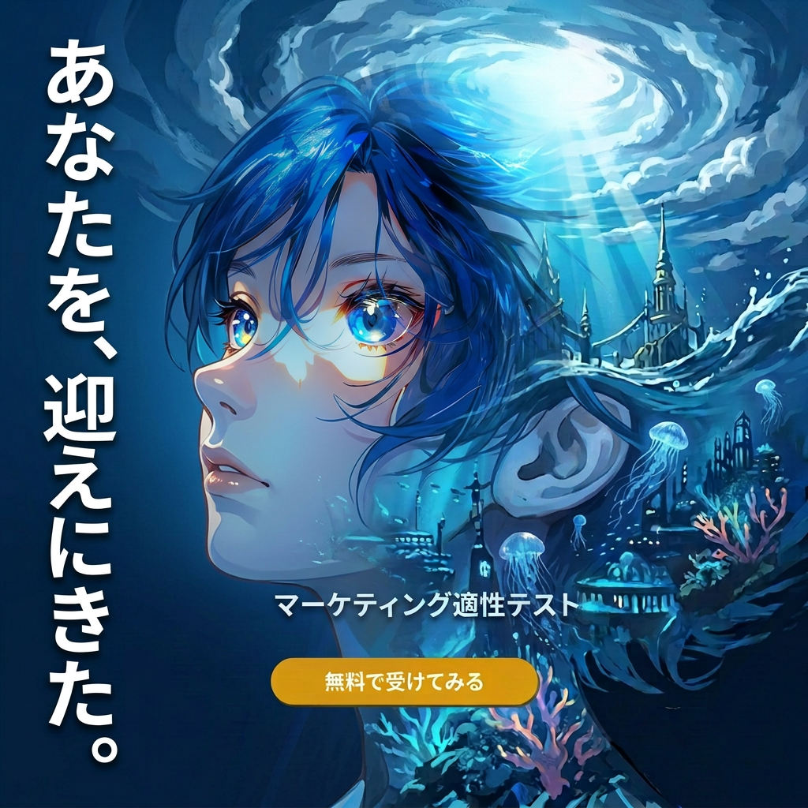
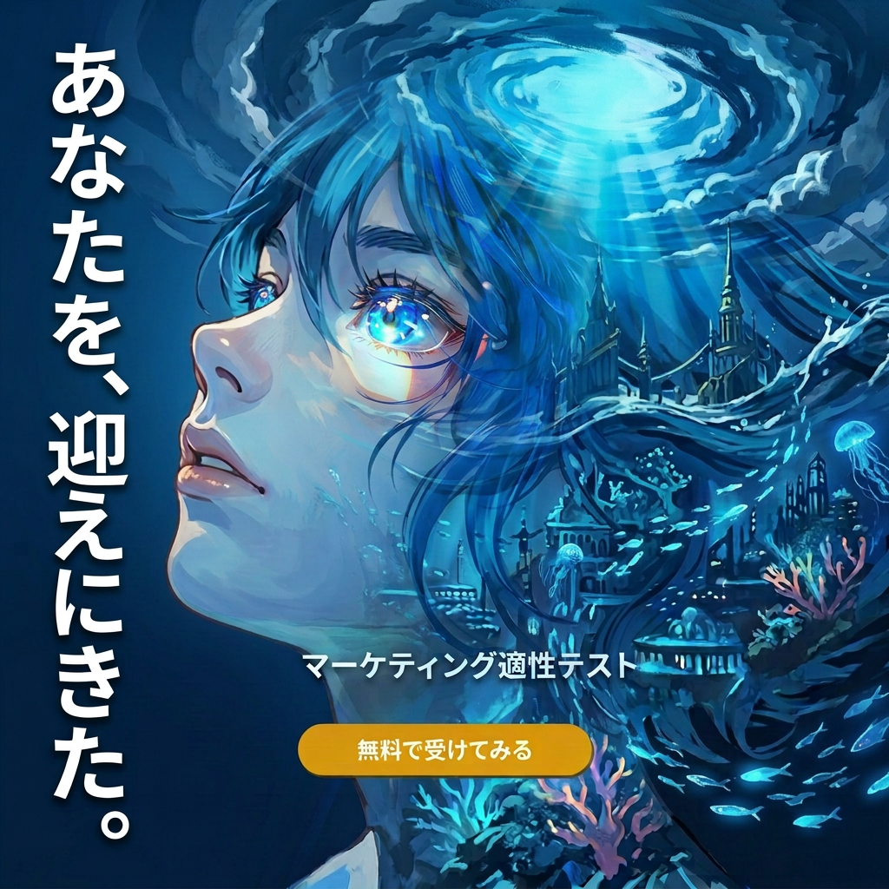

C05: WORLD WITHIN リメイク — 合格
フィードバック: 構図は維持。AIっぽさを消してLP世界観を反映。FV女の子を同一人物として配置。目に光・炎・きらきら。深い青の統一感を壊すな。
自己FB（品質チェック結果）
テキスト正確性: 5/5 — あなたを、迎えにきた。全文字正確、重複なしテキスト可読性: 5/5 — 大きく太い白文字、青背景で明瞭
構図: 5/5 — Originalと同一構図（女の子右・テキスト左）
色調: 5/5 — 深い青の統一感が完璧。灰色・暖色なし
キャラクター: 5/5 — FV Girl反映、青髪、きらきら目、海底世界が溶け込む
Original維持度: 5/5 — 全ての良さを保持
N1が手を止めるか: 5/5 — 美しく、世界に引き込まれる
判定: 合格 ✅
ORIGINAL

C05 Originalv14-09ベース
BEST ✅

C05 Remake 03深い青統一 + FV Girl
候補

C05 Remake 02深い青統一 + FV Girl